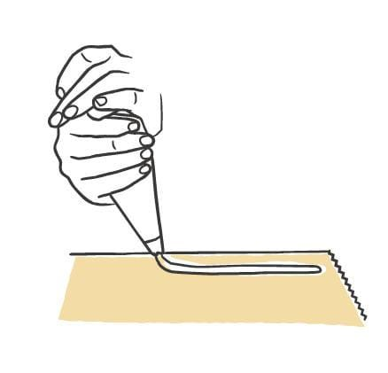
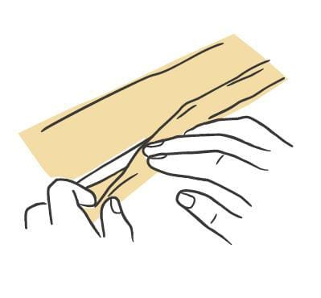
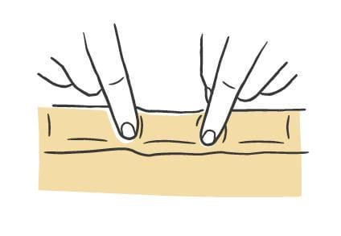
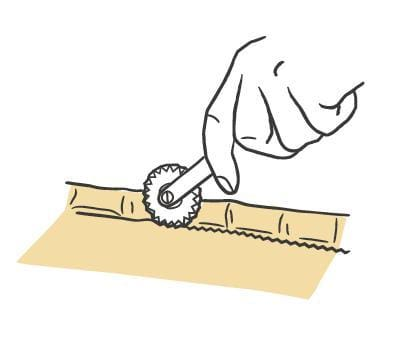
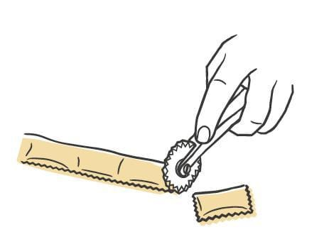
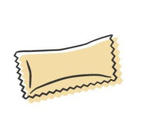
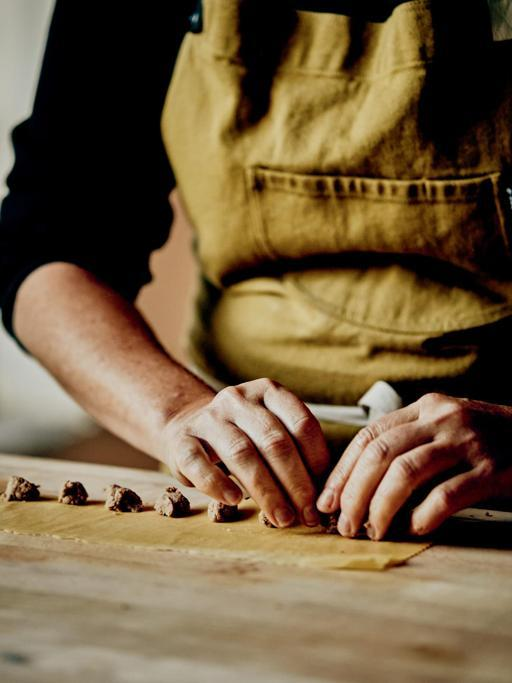
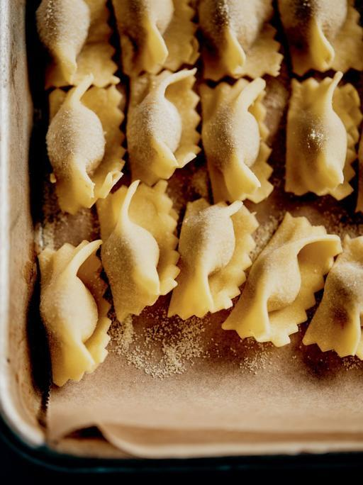

Pasta / Shapes
Agnolotti
- Dough
- Egg Dough
- Region
- Piedmont mainly, also Lombardy, Tuscany, and farther south
- Rest
- 45 minutes to 1 hour uncovered in the refrigerator
- Source
- Pasta, Missy Robbins
- Formed
- stuffed
Shaping








Method
- Make your chosen egg-based dough, then roll and sheet it.
- Dust a wooden board with 00 flour. Cover a sheet pan with parchment, then dust the parchment with semolina.
- Trim the sheets to 18-inch lengths with a knife and cut away the ragged edges. Save the scraps for soup. Keep the sheets under plastic wrap or a towel.
- Lay one sheet lengthwise in front of you. Using a pastry bag cut to a 1/2-inch opening, pipe a rope of filling about as thick as a Sharpie, 1/2 inch in from the bottom edge.
- If the dough feels dry rather than moderately tacky, mist it with a spray bottle held 8 to 10 inches above the board. Skip this if the dough is already tacky.
- Fold the bottom edge up and over the filling so the dough hugs it. Press the edge onto the sheet below, rolling the filled side slightly over itself, and force the air out so you end up with a continuous, tightly packed tube.
- Working left to right, press down with both index fingers held roughly 3 inches apart to seal off pillows 3 inches wide. Go back over every press to confirm the seal.
- Run a fluted pastry cutter along the seam to shave off the empty sheet, staying as tight to the seam as possible. Pull off the leftover strip and save it for another row.
- With the same cutter, separate the pillows by cutting between them, centering each cut on a finger depression.
- Move the pieces to the prepared pan in a single layer and dust the pan again with semolina.
- Repeat with the rest of that sheet, then with the remaining sheets.
- Refrigerate uncovered for 45 minutes to 1 hour to dry. Covered pieces sweat and get too wet. To hold longer, lay plastic wrap loosely over the pan and refrigerate up to 8 hours.
Notes
- Sheets are trimmed to 18 inches long. Finished pillows are 3 inches wide.
- Filling per piece: a continuous rope about the thickness of a Sharpie, laid 1/2 inch from the bottom edge and piped through a 1/2-inch opening. Because the filling runs in one line, the quantity per piece is set by pillow width rather than by portioning.
- Spacing is set by your hands: two index fingers about 3 inches apart define each pillow.
- Cutter: fluted pastry cutter, used both to trim the seam and to separate the pieces.
- Seal geometry: the sheet folds up over the filling and rolls slightly onto itself, then gets pressed to the sheet below. Air has to be forced out during the fold so the tube stays tight.
- The lumbar-pillow form holds more filling than tortelli or ravioli.
- Storage: 45 minutes to 1 hour uncovered to dry, then up to 8 hours refrigerated under loose plastic.
- Treated interchangeably with other robust filled shapes. Suits a delicate whipped cheese filling meant to be the focus of the dish.